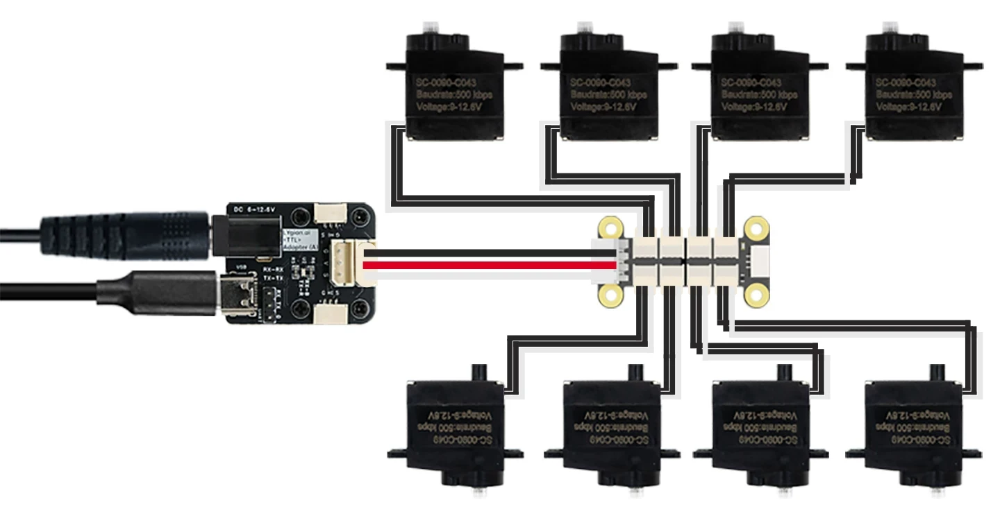
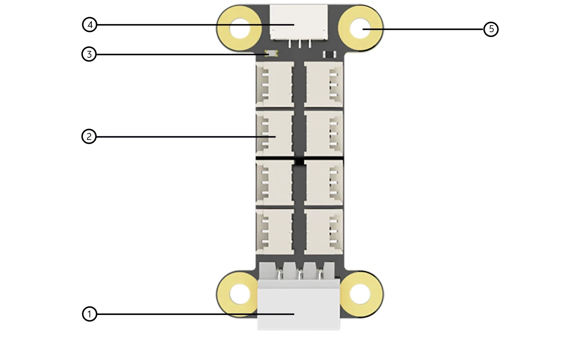
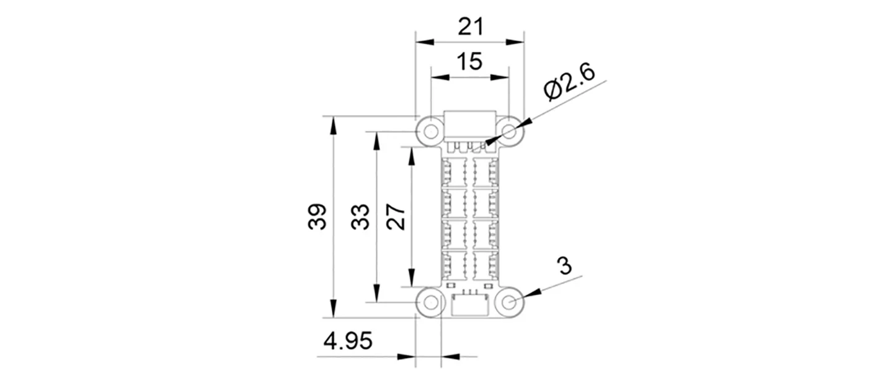

接口集中
8 个 HC-1.25-3P 接口排列在同一块板上，设备增多时也能保持线束整洁。
将多个设备并入总线WHAT IT SOLVES
机器人需要把多个小型编码器、舵机等设备并入 TTL 总线同时控制。HC-1.25 8P Hub (A) 不改变通信协议，只负责把总线与电源可靠分配到 8 个 HC-1.25-3P 接口，尺寸小巧，易于集成在灵巧手和紧凑型机器人中。
8 个 HC-1.25-3P 接口排列在同一块板上，设备增多时也能保持线束整洁。
将多个设备并入总线板体仅 39 × 21mm，适用于灵巧手、多足机器人和紧凑机械臂。
适合空间受限的场景GH-1.25-3P 接口只连接通信线，可配合独立设备电源实现通信与供电解耦。
适配不同供电方案HX-5264-3P 主控接口同时接入通信与供电，可直接连接常用主控设备。
降低接线成本WIRING

DEVICE EXPANSION
一块 HC-1.25 8P Hub (A) 可同时连接 8 个带 HC-1.25-3P 接口的总线设备。主控只需接入一条总线，即可按设备 ID 分别读取编码器或控制微型舵机。


ONBOARD RESOURCES
DIMENSIONS
板体宽度 21mm、总长度 39mm，安装孔横向孔距 15mm、纵向孔距 33mm。紧凑的长条结构便于沿机器人关节或狭窄腔体布置。

EXPAND DEVICES
适合连接 HC1.25-3P 接口的 TTL 总线设备：灵影(Lygion)的总线产品，飞特(Feetech)的 STS、HLS、SCS 系列总线舵机


BUS SYSTEM
通过 HC-1.25 8P Hub (A)，多个编码器和微型总线舵机可以汇入同一条 TTL 总线，由主控按 ID 统一读取和控制。
SPECIFICATIONS
PACKAGE
SUPPORT
调试工具、SDK 与开发教程等资料可参考产品 Wiki。